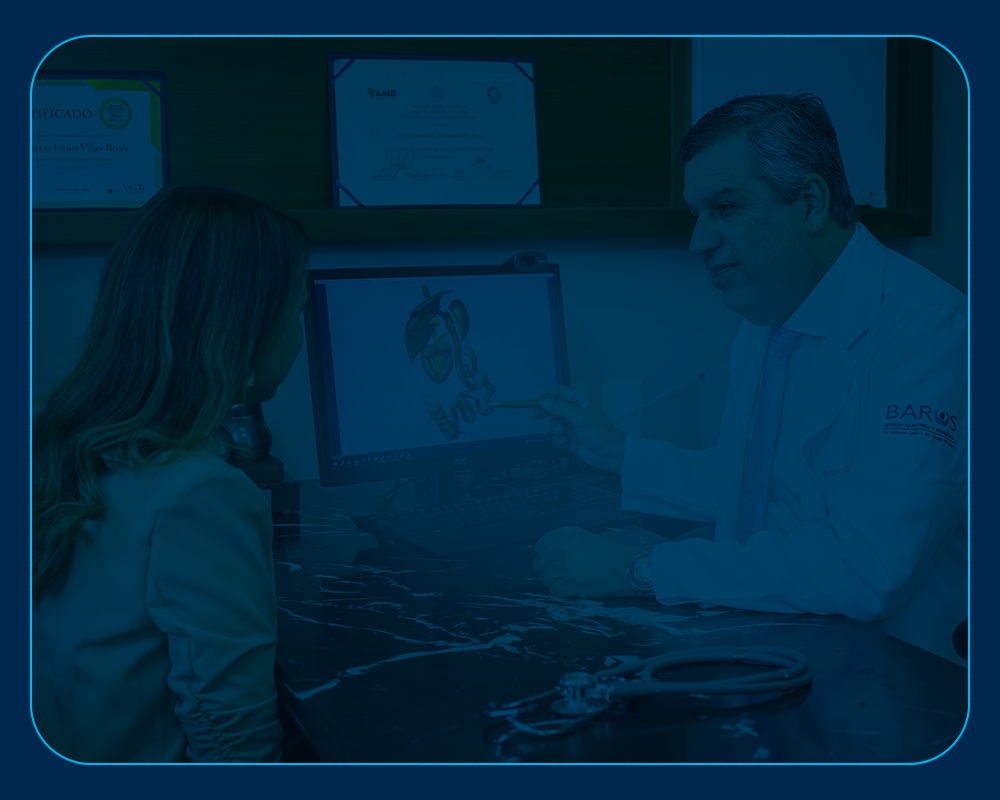

1
Primeira
Consulta
Escuta, acolhimento e entendimento do seu caso.

Em mais de 26 anos de história, mais de 5 mil cirurgias já foram realizadas. Cuidamos da sua saúde com eficiência, segurança e acompanhamento multiprofissional.

Unimos pioneirismo tecnológico a um atendimento profundamente humanizado para garantir que sua jornada de saúde seja segura e transformadora.
Pioneirismo e experiência no cuidado com obesidade, com condutas individualizadas e foco em resultados sustentáveis.
Um ecossistema de especialistas integrados: cirurgiões, nutricionistas e psicólogos trabalhando no seu caso em tempo real.
Do preparo até a recuperação, você é acompanhado em cada etapa com orientação especializada e monitoramento contínuo.
O objetivo do cuidado é promover mais saúde e bem-estar com segurança, respeitando a realidade e os objetivos de cada paciente.
Cada pessoa chega com uma história única. Descubra o caminho ideal para o seu momento de saúde.

Abordagem completa com avaliação individual e acompanhamento da nossa equipe multidisciplinar focada na sua qualidade de vida a longo prazo.

Análise minuciosa do seu histórico clínico para definir se a cirurgia bariátrica é o caminho mais seguro e eficiente para sua transformação.

Uma solução avançada para remissão do diabetes tipo 2 e controle de doenças metabólicas associadas ao excesso de peso.
Do primeiro atendimento ao pós-operatório: uma jornada transparente, com orientação contínua e total segurança hospitalar.

Escuta, acolhimento e entendimento do seu caso.
Análise cuidadosa com os profissionais envolvidos no tratamento: aspectos clínicos, nutricionais, emocionais e metabólicos.
A equipe define o caminho mais indicado: acompanhamento clínico, cirurgia bariátrica ou metabólica.
Etapa de preparo com exames e orientações para chegar ao procedimento com segurança e tranquilidade.
Realizada com planejamento, suporte especializado e estrutura adequada para cada paciente.
A equipe segue ao seu lado na recuperação, reeducação de hábitos e manutenção da saúde a longo prazo.